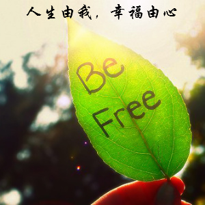

人生由我，幸福由心纵使路途遥远曲折，我也能选择走过的方式；纵使生活多烦忧，我也能知福惜福。人生由我，幸福由心，有一颗想要快乐、懂得珍惜的心，何时何地都能露出发自内心的笑容。 这个世界本来就不公平，每个人随时都有可能处在不公平的境况之中，但是很多人仍然能够在不公平之中生活着，就是因为他们找到了面对不公平的方法。他们没有怨天尤人，首先尝试解决眼前的不公平，若能解决是件好事，若不能解决也不需要过于沮丧，只要还能活着就是一件幸福的事情了。无法解决的不公平就不要再耿耿于怀了，想得越多只会让自己更加难过，倒不如把注意力放在需要我们努力完成的事情上，用忙碌和成就感忘却对这个世界的不满，增加幸福感。 幸福有一部分是别人给的，但是绝大部分都需要由自己去发现、追求和珍惜的。有时候幸福披着平凡的外衣，很容易让人忽略；有时候幸福隐藏在苦难之中，让人避之不及。很多时候幸福并不是那么轻易就能发现，因为它太擅长伪装，只有渴望幸福、用心去看的人，才有可能看到幸福的真面目，才有可能把幸福握在手心。 人生的道路不会太平坦，生活也不会让我过得太舒畅，即使如此，我仍然能够选择我想要的生活，做我想做的事情，也许需要克服很多困难，但我甘之如饴，因为我得到了幸福。人生由我，幸福由心，不管遇到了多少艰难险阻，都能活得幸福安然。 纵使路途遥远曲折，我也能选择走过的方式；纵使生活多烦忧，我也能知福惜福。人生由我，幸福由心，有一颗想要快乐、懂得珍惜的心，何时何地都能露出发自内心的笑容。 这个世界本来就不公平，每个人随时都有可能处在不公平的境况之中，但是很多人仍然能够在不公平之中生活着，就是因为他们找到了面对不公平的方法。他们没有怨天尤人，首先尝试解决眼前的不公平，若能解决是件好事，若不能解决也不需要过于沮丧，只要还能活着就是一件幸福的事情了。无法解决的不公平就不要再耿耿于怀了，想得越多只会让自己更加难过，倒不如把注意力放在需要我们努力完成的事情上，用忙碌和成就感忘却对这个世界的不满，增加幸福感。 幸福有一部分是别人给的，但是绝大部分都需要由自己去发现、追求和珍惜的。有时候幸福披着平凡的外衣，很容易让人忽略；有时候幸福隐藏在苦难之中，让人避之不及。很多时候幸福并不是那么轻易就能发现，因为它太擅长伪装，只有渴望幸福、用心去看的人，才有可能看到幸福的真面目，才有可能把幸福握在手心。 人生的道路不会太平坦，生活也不会让我过得太舒畅，即使如此，我仍然能够选择我想要的生活，做我想做的事情，也许需要克服很多困难，但我甘之如饴，因为我得到了幸福。人生由我，幸福由心，不管遇到了多少艰难险阻，都能活得幸福安然。